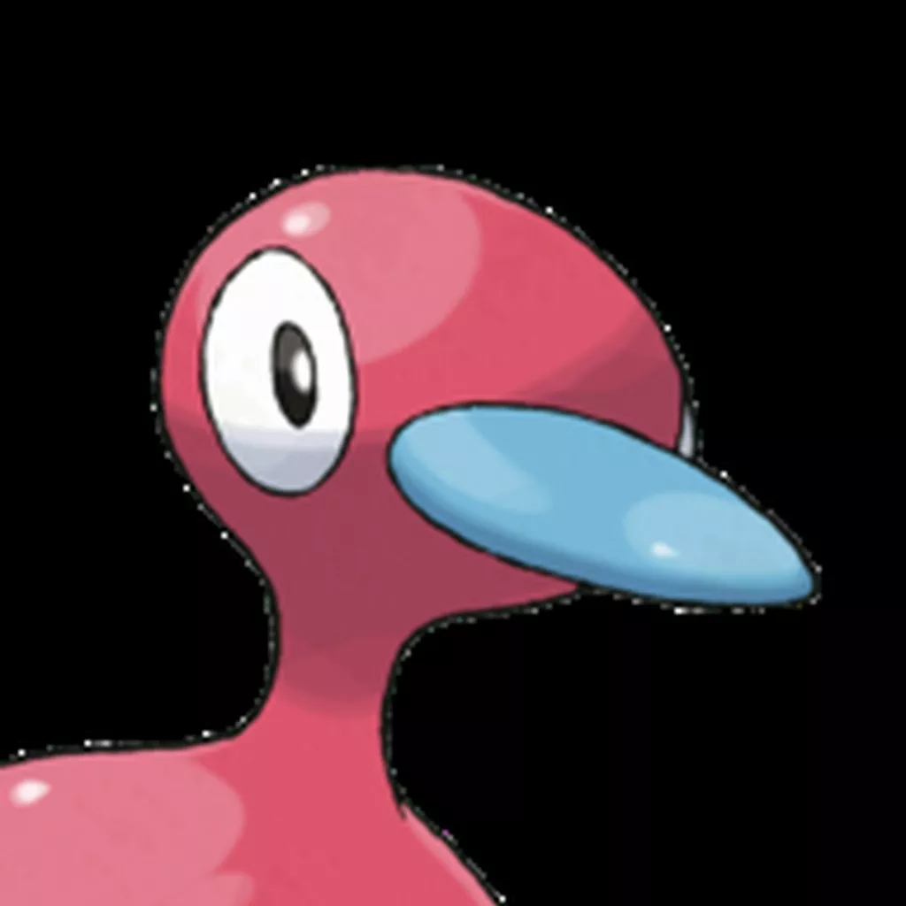

chafla
Matt Thompson
github: http://github.com/chafla
discord: Luc#5653
Projects
Porygon2

Porygon2 is a multi-function Discord bot written from scratch over the course of 1.5 years. It was created originally to serve a small gaming community, and now serves as a primary bot for a server with over 21,000 members. It serves moderation and managerial purposes, as well as memes.
github
HockeyBot
HockeyBot is a small bot that I wrote during the fall of 2016 for a friend in a hockey-related discord. It accesses an open endpoint for NHL scores, parses the data, and feeds back scores as they happen to a chatroom.
github
goPC
goPC, also known as Somebody's PC, is a bot that I wrote soon after the release of the infamous mobile app Pokémon GO. I had previously written a small moderation-related bot for one of the largest discord servers related to the topic (currently at 20,000 members) with the purpose of allowing users to assign their own roles. As the popularity of the game grew, more and more people began to ask me for a version of the bot for their own servers, which I wrote up and released. It is currently in use in 85 different servers.
github